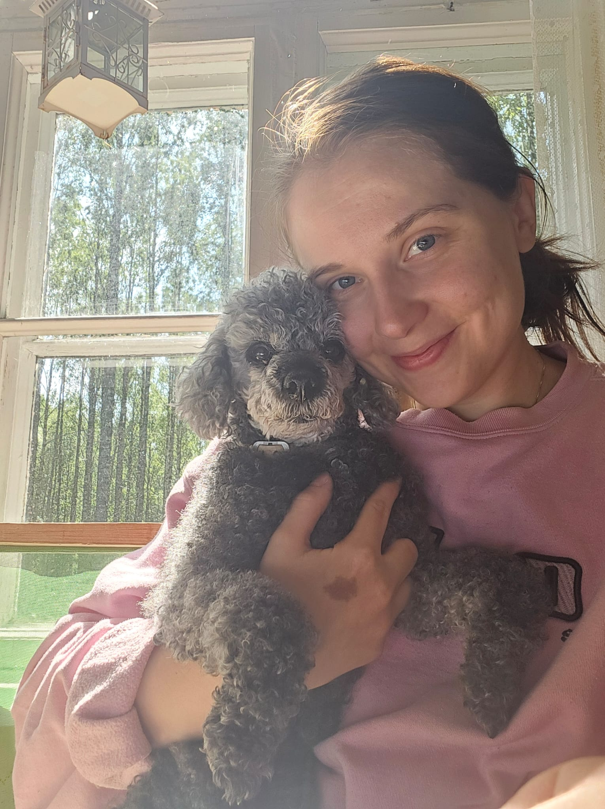

Linda Oksanen
Käyttäjäsuunnittelu | Design | Asiakaspalvelu |
Empatia | Haaveilija | Luova | Neulonta
Linda Oksanen
Käyttäjäsuunnittelu | Design | Asiakaspalvelu |
Empatia | Haaveilija | Luova | Neulonta
Olen digitaalisen sisällön ja asiakaspalvelun ammattilainen, joka opiskelee parhaillaan sosiaalipsykologiaa sekä sivuaineina työhyvinvointipsykologiaa ja tietojenkäsittelyä. Tavoitteenani on rakentaa entistä inhimillisempiä, saavutettavampia ja toimivampia verkkopalveluita.
Innostun aidoista kohtaamisista, saumattoman palvelukokemuksen luomisesta ja ongelmanratkaisusta. Haluan päästä työskentelemään inspiroivassa ja merkityksellisessä ympäristössä, jossa pystyn osallistumaan ja vaikuttamaan. Pidän niin tiimityöstä kuin rutiininomaisesta yksintyöskentelystä, enkä pelkää tarttua haasteisiin. Otan oppia mielelläni myös itseäni kokeneemmilta kehittääkseni omaa työskentelyäni entistä paremmaksi.
Minulta kysytään usein: “Mikä sinusta tulee isona?” Tähän vastaan nykyään, että tutkija. En halua laittaa itseäni lokeroon, vaan haluan tutkia ja innostua laajasti eri asioista.
Työskentelyni tukipilareita ovat tasa-arvo, oikeudenmukaisuus ja empatia. Haluan toiminnallani luoda positiivista, innovatiivista ja tasa-arvoista maailmaa kaikille. Se ei tarkoita, että pyörä pitäisi keksiä uudestaan, vaan uskon kuuntelemisen ja havainnoinnin voimaan, joilla pienilläkin teoilla voidaan tehdä iso vaikutus. Minusta saat tiimiisi sitoutuneen, empaattisen ja kehityshakuisen tekijän.

Yhteiskuntatieteet | Sosiaalipsykologia
Alko
Nanso
RPT Byggfakta Oy/ Academic Work
Teollisuus-ja brändimuotoilu
Alko
Osa-aikaisuus opiskeluiden ohessa
Tehdään yhdessä töitä.